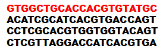
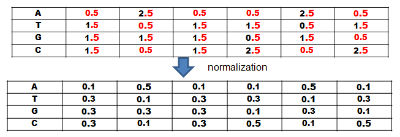

Gibbs-Sampler
motif search de novo or with prior knowledge
In this documentation the basic principles of the Gibbs-Sampling will be explained with a focus on its use in computational biology.
Also does this project build currently on top of BioFSharp and will be integrated at a later step.
Gibbs-Sampling is an algorithm based on the Markov-Chain-Monte-Carlo method, which enables the calculation of a joint distribution solely based on conditional distributions without prior knowledge. In computational biology it is commonly used to find conserved segments, so called motifs, that are part of different sequences. Motifs are segments of sequences with a similar structure and can be, for example, transcription-factor-binding-sites in DNA or ligand-binding-sites in proteins. These binding-sites enable the binding of those elements, in order to regulate the activity of the target. Transcription-factor-binding-sites are often located in the promoter and 5'UTR of genes, which enable the regulation of the gene activity downstreams.
My research-group researches the heath-shock-response of the alga Chlamydomonas reinhardtii by evaluating the proteome compositions of different mutants and targeting the corresponding genes. The goal of implementing this algorithm is to detect the transcription-factor-binding-sites of Heat-Shock-Factors (HSFs), proteins that regulate the gene-activity during heat-stress. These binding-sites are called Heat-Shock-Elements (HSEs) and it is suspected that they are located in many genes. Sadly, they are poorly conserved compared to the HSEs of other organims and we hope that we can detect more HSE regulated genes by implementing a Gibbs-Sampling-Algorithm.
There are two distinct types of Gibbs-Sampling-Algorithms, the Site-Sampler and motif-Sampler. Both of them share the basic idea but while the Site-Sampler requires a motif in every sequence to work properly, the motif-Sampler does not. The motif-Sampler can also find multiple motifs per sequence, while the Site-Sampler can only find one but works faster and is more sensitive for less conserved structures then the motif-Sampler. In order for both to wok proberly, the length of the sequence must be known. The core idea of the Site-Sampler will now be explained with an example:

Figure 1.

Figure 2.
You have four sequences (see Figure 1) and you pick one at random and put it aside. After that you choose one segment with the length of your motif in every sequence you did not choose (see Figure 2).
Figure 3.

Figure 4.
Align these segments with eacht other and count the amount of elements at each position in order to create a so called Position-Frequency-Matrix (PFM) (see Figure 3). In the next step ypu create a so called position probability matrix by adding a pseudocount to each element at each position and normalize by dividing each element at each position through the sum of the column (see Figure 4). You add a pseudocount in order to avoid dividing through zero because often times the segments are rather short and do not contain every element and it is still possible to encounter one in the rest of the sequence.

Figure 5.

Figure 6.
Then you create a so called Frequency-Composite-Vector (FCV) by counting the amount of elements in the unchosen sequences without the elements that are part of the segments
that are used to create the PFM. In the following you work with the chosen sequence by increasing the counts of the vector with amount of elements in this sequence and add a pseudocount to each element.
The PPM is now used to calculate the likelyhood of each segment to be a motif by multiplying the likelyhoods of the found elements to be at that position (see Figure 4 & 6).
Figure 7.
Now that the segment likelyhoods are calculated it is time to check, how different they are from the background. For that, the FCV is tuned by creating a new FCV for every segment. For that, the count of eacht element is substracted from the total counts of elements in the FCV but it must not be smaller than the pseudocount. This is done because some input sequences are very small and significant element combinations (e.g. several Ts in a row) could get low weight because they are otherwise evenly distributed. So by reducing the count for the segment, their weight is increased. After that the FCVs are normalized by dividing every element count by the the sum of the vector. These new vectors are Probability-Composite-Vectors (PCV) and represent the likelyhood to pick a element by chance when picking a random element from the sequences (see Figure 7).

Figure 8.
The PCVs are then used to calculate the likelyhood for a segment to be background by multiplying the likelyhood of the element to be picked at random in the segment. To calculate this likelyhood only the PCVs that were created without the elements of the segment are used and these new background segment scores are used to normalize the PPM segment score in the earlier step. The result of this division is then log2 transformed to get the so called Position-Weight-Matrix-Score (PWMS). Based on the PWMSs in Figure 8, PWMS is more likely to be a conserved motif and would be remembered (see Figure 8). A Position-Weight-Matrix (PWM) is a PPM normalized to its background but becasue we assume no prior knowledge about the background the vectors and the PWMs need to be calculatedfor every segment anew.
The motif with the best PWMS is remembered of the chosen sequence and then a new sequence is chosen at random and the calculation of the vectors and matrices repeated in the same fashion until every sequence had been chosen. Then the remembered motifs are used to calculate a new PPM. A sequence is randomly chosen and the best PWMS is looked for, using the PPM. Then the PWMS of this iteration is compared with the remembered PWMS and if it is better it replaces the old one and a new PPM is calculated. Otherwise the old PPM is kept and the next Sequence chosen at random and these iterations are repeated until convergence occures. That means, that always the same motifs are chosen because they have the best PWMSs. This happens because by chance a random start will happen in one of the conserved structures and then it is more likely to find another conserverd structure in one of the other sequences, because they are more similiar to each other than the background and have a higher PWMS that way.
The first step in analyzing your bio sequence is transforming it into an array of BioArrays of IBioItems. This can be done easily by applaying the BioArray.ofNucleotideString of the BioFSharp-Library.
1: 2: 3: 4: 5: 6: 7: 8: 9: 10: 11: 12: 13: 14: 15: 16: |
|
Based on the knwoledge different kinds of site sampling functions can be chosen. All depend on knowing the length of the motif you are looking for. The most basic Site-Sampling function requires the motif length, pseudoCount, the sources in the form of an array of BioArrays of IBioItemsand the used alphabet. The alphabet is a collection of bioitems representing DNA bases or amino acids that are part of your sequence and enable the avoidance of unnecessary iterations, for ecample Uracil positions when the sequence consists of DNA or Amino-Acids.
1: 2: 3: 4: |
|
This function gives you the PWMSs and Positions of the best fitting motifs after the random initialization.
1: 2: 3: |
|
This function iterates through the sequences until its first convergence and gives you then the PWMSs and Positions of the best motif of every sequence. It requires a Startposition in contrast to the first function because it has no random initialization but it can be piped easily behind the other.
1: 2: 3: 4: |
|
These functions are doing a side check, which means, that ich looks if upstream or downstream of the position a better sequence is, because one of the weakpoints of the Gibbs Sampling Algorithm is, that it can have difficulty finding the global maximum due to local maxima. With the shift the function checks whether there are better fitting motifs close to the motifs of the first convergence or not and if yes, gives them to you.
1: 2: 3: 4: 5: 6: 7: 8: 9: 10: 11: 12: 13: 14: 15: 16: 17: |
|
The combination of these functions can be used like the ones before but in contrast to those they require an externe Probability-Composite-Vector. This is avantegous, because it enables you to create a specific background for the motif you are looking for and the usage of prior knowledge, e.g. the genome has an equal distribution of all four bases, then you can just create a PCV based on the alphabet given in this documentation but an PCV with the desired probabilities can easily be created otherwise too, using the increaseInPlace functions.
1: 2: 3: 4: 5: 6: 7: 8: 9: 10: 11: 12: 13: 14: 15: 16: 17: |
|
These functions are best used when you already know the motif you are looking for but lack knowledge of the background. They skip the random initlialization step and use the given PPM to find the best fitting motifs in the first iteration step and update it with every found motif with a higher PWMS.
1: 2: 3: 4: 5: 6: 7: 8: 9: 10: 11: 12: 13: 14: 15: 16: |
|
The getmotifsWithBestPWMSOfPWM finds the best motif for every sequence based on the given PWM and without a randwom start. The PWM is only updated after it has found the best motif for every squence. Based on the information available to you, you can change the functions that follwo the getmotifsWithBestPWMSOfPWM with one of teh above functions.
Gibbs-Sampling is an algorithm that can be used with little prio knowledge to find conserved motifs in sequences by stumpling into one motif at random, which biases the matrix to find more similiar motifs. Even when it can be used with little prior knowledge its sensitivity and speed can be increased and randomness reduced with more knowledge. But still, the alggorithm has the problem of being heuristic and not finding the same motifs and so several repetitions and result comparrisons are needed. Also can local maxima be a problem but their burden can be reduced, thanks to the shift functions. The Gibbs-Sampling-Algorithm is a useful tool to find conserved structures in biological sequences because it is easy to use and besides its heuristic nature, it works reliable. Thank you for reading this long post! Good luck with your motif search!
from GibbsSampling
from GibbsSampling
module Seq
from FSharpAux
--------------------
module Seq
from Microsoft.FSharp.Collections
from BioFSharp
module Array
from FSharpAux
--------------------
module Array
from Microsoft.FSharp.Collections
from BioFSharp
| A
| T
| G
| C
| U
| I
| Gap
| Ter
| R
| Y
...
interface IBioItem
static member op_Explicit : value:#IBioItem -> int
static member op_Explicit : value:#IBioItem -> byte
from GibbsSampling
type ProbabilityCompositeVector =
inherit CompositeVector<IBioItem,float>
new : unit -> ProbabilityCompositeVector
private new : array:float [] -> ProbabilityCompositeVector
--------------------
new : unit -> CompositeVector.ProbabilityCompositeVector
type PositionWeightMatrix =
inherit BaseMatrix<IBioItem,float>
new : rowLength:int -> PositionWeightMatrix
private new : matrix:float [,] -> PositionWeightMatrix
--------------------
new : rowLength:int -> PositionWeightMatrix